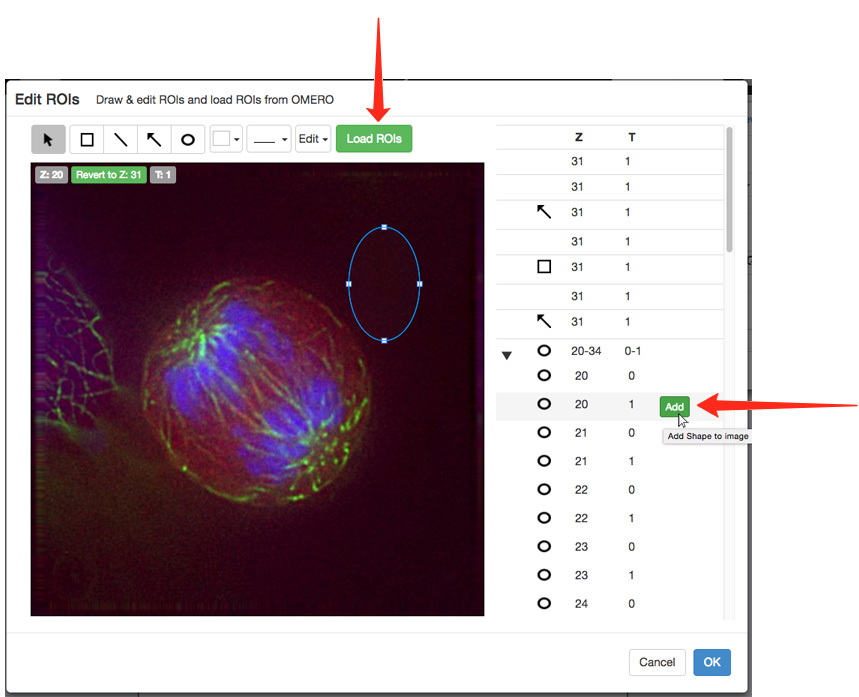

Log into your OMERO.web client.
Select the images you wish to use.
Right-click on a selected image in the data tree.
From the contextual menu select Open With... > OMERO.figure.
This will open OMERO.figure in a new tab with the selected images in panels on the canvas.

Alternatively, click Figure in the top toolbar, and OMERO.figure will open in a new tab.
In the Welcome to OMERO.figure dialog, select Create New File or open an existing file.
When you create a new file, you will immediately go to the Add Images dialog below.

Add additional images to the canvas.
To open the dialog, click the Add Image button in the OMERO.figure toolbar.
In the main OMERO.web tab, click on the Link button in the right-hand panel to copy the URL to individual or multi-selected images.
Alternatively, the Image ID for an individual image can be copied from the right-hand pane.
Paste the URL or ID into the Add Images dialog in OMERO.figure (shown above).

Each image selected will appear on the canvas in a panel.
These panels can then be moved, rearranged, copied, pasted and resized.
The images in the panels can be zoomed, panned, labelled and scale bars added.
Zoom in or out of the canvas using the slider at the bottom of the window.

Click on the File drop-down menu to change the size of the canvas.
Select Paper Setup ....
Select the number of pages from the drop-down.
Select the size and orientation of your canvas.

Image panels on the canvas can be selected individually or multi-selected.
Copy and paste the panels to form rows or columns of the same images.
Use the Edit menu or standard keyboard shortcuts to Undo, Redo, Copy and Paste.
Use the layout buttons on the right to resize or align evenly.
Tooltips show the function of each button.

With one or more panels selected, the rendering settings can be adjusted in the Preview tab just as they are in the OMERO clients.

Note
If multi-selected images do not have the same number of channels, Z sections or time points, those controls will be greyed-out in the Preview tab.
If you select two or more images that have different settings, for example, different channels switched on and off, different zoom levels, or pan locations, then these can be resynchronized by changing the setting while they are selected.
Using the Preview pane, panels can be zoomed, panned by clicking-and-dragging the preview image, and the image rotated.

Click on the Projection icon to display the image as a maximum intensity view.
The range of Z sections included in the projection is displayed below the slider.
Click on the arrows above or below the slider to shift the range of sections included in the projection.
Use the drag handles on the slider to expand the Z section range.

Click on the Crop button to open the Crop to Region panel.
Select an existing ROI to use as a cropping region,
or click and drag on the image to draw a crop region.
Use the drag handles to adjust the crop and click OK.
Click on the Labels tab to add a scale bar and add or edit labels on panels.
Click Show to add a scale bar to selected images.
If the image does not have pixel sizes in its metadata, you must manually set this before you can add a scale bar.
Use the text box to adjust length and the drop-downs to select position and color.
Click the Label check box to add a label and select the font size from the drop down.
As you zoom in on images, scale bars may extend outside the panel.
If this occurs use the scale bar text box to adjust the length of the bar shown.

Select from the drop-down menu to use image name, dataset or metadata fields to automatically add labels, or type your own text into the box.
Select font size, positioning and color from the drop-downs.
Click Add.
Use the same controls on each added label to change the text or setting on a label.
Click the red X to delete a label.

Select a standard label color or click More Colors... to use the Color Picker.
To make a time sequence, set the desired time point for each image using the T slider.
With all the images selected, choose a Time option from the label drop-down menu.
Set font size, placement and color.
Incrementing or decrementing T with more than one image selected will maintain the pre-set intervals between the images.

To add a new row of panels, with another image but the same settings as an existing row, select all panels in the row, copy and paste the row and align as appropriate.
Select the pasted row and in the Info tab, click Edit ID.
Copy and paste or enter the ID of the new image in the text box.
Click Preview to check that the new image is compatible with the settings.
If matching is compatible, click Update.

On the Labels tab under the ROIs section, click Edit to add and edit ROI shapes on the selected panel.
In the Edit ROIs dialog, draw rectangle, line, arrow and ellipse ROIs on the panel.
Line color and thickness can be selected using the drop-downs.
To load ROIs saved on the image in OMERO, click the Load ROIs button.
Shapes will be loaded and displayed. Mousing over a shape will show its location on the image. Clicking the Add button will add the shape to the image. It can then be edited as described above.
For multi-plane images, the panel will update to show the Z and T index of the newly-added shape. If this is not desired, you can click the Revert to Z/T buttons that will appear at the top-left of the image.
Note
OMERO.figure simply copies ROIs from OMERO and adds them to figure files but doesn't save any changes to the original ROIs in OMERO.
ROI shapes can be edited or moved after adding, and copied and pasted using the Edit menu or keyboard shortcuts.
Click OK to add the shapes to the figure.
Copy shapes in the Edit ROIs dialog, close the dialog and select panels in the main Figure drawing.
Use keyboard shortcuts to paste the ROIs directly onto the selected panels.
Note
Shapes will be pasted at the same coordinates as on the source image. If the target image is smaller or zoomed in to a different region, then shapes may not be visible. In this case a warning message will be displayed.
Rectangular ROIs on one panel can be used to crop other panels to the same area.
Select the panel with the ROI on it.
Click Copy in the ROIs toolbar in the Labels tab.
Select the panel to be cropped.
In the Preview tab, click Paste.
Non-microscopy images such as scans of Western blots or charts can be imported using OMERO.insight, and used in Figure.
Charts created in other software, such as Microsoft Excel®, need to be saved or exported as images in a suitable format for import, such as TIFF, PNG or JPEG.
Select the required images in OMERO.web, copy the link and add to the Figure canvas as before.
These images can then be resized, zoomed, cropped and ROIs added as described.
Click Edit Figure Legend to add a legend to the figure.
Mark-down syntax is supported to enable formatting of the text and inclusion of links.
Click Save to display the formatted text.
Click the Info tab to see the resolution for selected panels in dpi.
If you wish to increase the dpi of images within the exported PDF figure, click on the Set dpi button to choose a target resolution.
Additional pixels will be created in the image and the data resampled using a bicubic filter.
Warning!
Policy regarding the use of interpolated images in figures varies from journal to journal, so this should considered before changing dpi settings.
Click Save to save your figure on the OMERO database.
Use the File menu to open any previously saved figures.

Once you have saved the figure, the file can be shared with other users in your collaborative group via the URL in the browser address box.

Click Export PDF to create a figure for download.
When this is complete the blue download button will become available.
The file created for export is linked to the images used in the figure as an attachment.

Use the drop-down on the Export PDF button to select different export options.
Select TIFF to export the figure as a TIFF image at 300 dpi.
Select the ... with images option to create a zip file that includes the figure and all the individual figure panels as separate images.
The zip will include the different processing stages of zooming, cropping, rotating, resampling etc. to act as a record of the figure generation steps.
Click the green button to create the selected format for export.
When this is complete the blue download button will become available.
Note
All exported figures and zips will be stored on the server and attached to the images that are in the figure.
The zips may become large if they include component images, but can be safely deleted after download if desired.
The final page of the exported PDF lists the names and links to the original images on the server, for all the images used in the figure.
This page also contains the text of any figure legend and other details of the figure.
As the elements of the figure are saved as vector graphics, the PDF can be downloaded and further refined by adding arrows, lines or additional text elements in your usual image editing app.